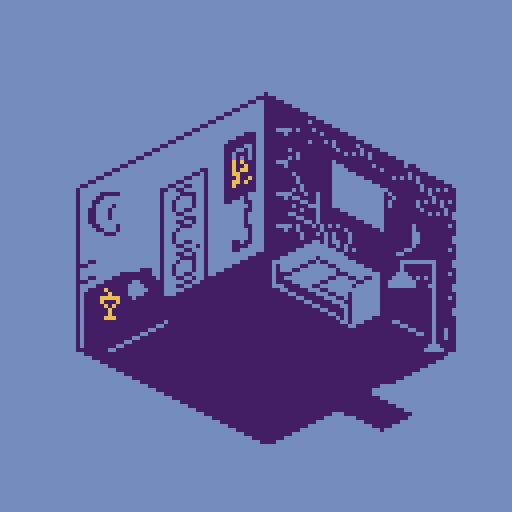
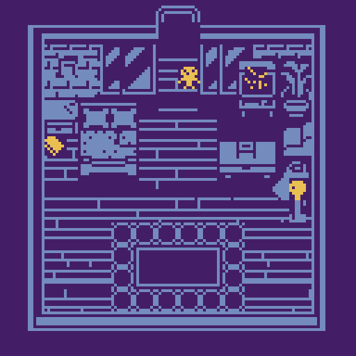

Between Going and Staying
8-Bit Interactive Poem
Bitsy, Logic Pro
Inspired by a poem written by Octavio Paz, I worked in collaboration with Olivia Losquadro to create an 8-bit immersive walk-through narrative. By interacting with items and environments, fragments of the poem are unveiled, guiding players deeper into the thematic exploration of "going and staying."
HTML, JS, Sound Design, Original Sound Composition, 8-Bit Illustration, Animation
DESKTOP-FRIENDLY DEMO BELOW, SPACEBAR TO START, CLICK TO START, ARROW KEYS TO MOVE/INTERACT ↘




